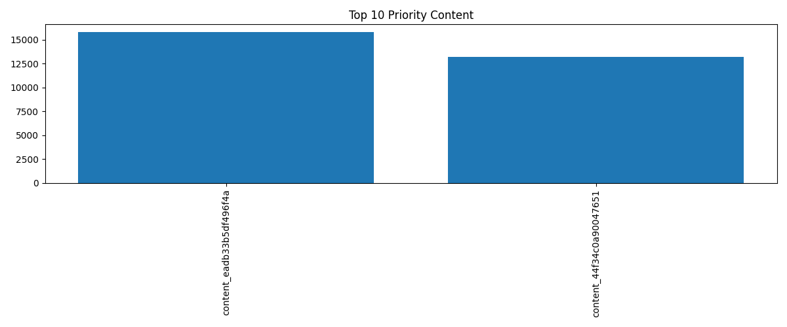

Abstract
This project investigates whether historical search visibility and user engagement metrics can support content refresh prioritization using the FlyRank ML Internship Warehouse dataset. Historical Google Search Console and Google Analytics 4 signals from the March 2026 warehouse release were analyzed to understand relationships between search visibility and user engagement. A transparent rule-based prioritization workflow was developed using only historical features while excluding future information and leakage-prone variables. The analysis demonstrates that combining multiple historical signals provides a practical way to prioritize pages for editorial review. The workflow is intended as a decision-support system rather than an automated publishing or prediction system.
Research Question
Can historical search visibility and engagement signals be used to prioritize content refresh opportunities while maintaining transparent, reproducible, and leakage-aware analysis?
Introduction
Large websites often contain thousands of pages, making it difficult for editorial teams to decide which content should be updated first. Search visibility and user engagement metrics provide valuable historical evidence about how pages perform, but those signals must be interpreted carefully.
The objective of this project is to develop a reproducible workflow that transforms historical search performance data into an evidence-based prioritization framework. Rather than predicting future rankings, the workflow identifies pages that deserve human review using observed historical signals.
Dataset
| Dataset | FlyRank ML Internship Warehouse |
|---|---|
| Release | March 2026 |
| Main Table | fact_content_daily_performance |
| Filter | GA4 data available only |
| Features |
|
Excluded Information
- Client identifiers
- Content identifiers as predictive features
- Future-window information
- Label-derived variables
Methodology
- Constructed a feature vector using historical search and engagement metrics.
- Performed exploratory signal analysis to understand relationships among features.
- Built a rule-based prioritization baseline using historical observations.
- Validated assumptions through leakage auditing and feature review.
- Converted validated outputs into a ranked editorial action playbook.
The workflow intentionally avoids causal claims and focuses on transparent decision support.
Results
The exploratory analysis identified meaningful relationships between historical search visibility and user engagement metrics. Instead of building a fully supervised prediction model, the project focused on transparent signal analysis and rule-based prioritization because the internship dataset did not provide an observed target label suitable for supervised learning.
Key Findings
- Pages with higher search impressions generally received more clicks.
- Engagement metrics such as sessions and pageviews complemented search visibility signals.
- Combining multiple historical signals produced more informative rankings than relying on a single metric.
- The resulting action queue is intended for editorial review rather than automated decision-making.
Priority Ranking Visualization

Limitations
- This analysis uses only the March 2026 warehouse release.
- No observed supervised target label was available.
- Results describe historical relationships rather than causal effects.
- The workflow supports human decision-making and should not be interpreted as an automated publishing system.
- Editorial judgment remains essential before any content changes are implemented.
Ranked Recommendations
| Priority | Recommended Action | Reason |
|---|---|---|
| High | Refresh Content | Strong visibility with meaningful engagement suggests updating content may preserve or improve performance. |
| Medium | Manual Review | Mixed signals require editorial assessment before changes are made. |
| Low | Monitor | Continue observing historical trends before investing additional effort. |
What Should NOT Be Automated
- Publishing new content
- Deleting pages
- Redirecting URLs
- Automatically rewriting articles
- Making editorial decisions without human review
Reproducibility
All notebooks, code, exported artifacts, and documentation are available in the GitHub repository created during the FlyRank ML Internship. The workflow can be reproduced by running the notebooks in sequence, starting with the warehouse data loading step and ending with the Action Playbook.
Repository: github.com/omi290/flyrank-ml-internship
Acknowledgments
This project was completed as part of the FlyRank ML Internship.
Built on the FlyRank ML Internship dataset.
Data Credit: https://flyrank.ai